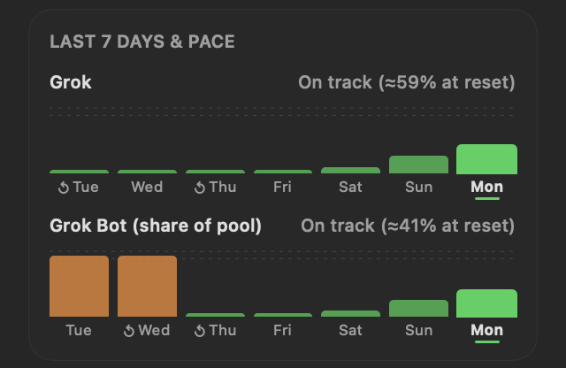
Pace & 7-day history
A bar, line or area graph for each ring, plus a projection: “On track (≈70% at reset)” or “At this pace you'll hit 100% by Fri 3 PM.”
v0.9.7.1 · Free & open source · macOS 14+
GrokGauge lives in your Mac's menu bar and shows your weekly SuperGrok usage as rings that turn green, orange and red, so the weekly limit never sneaks up on you.
brew install --cask stevencombs/tap/grokgauge
Installs the Grok CLI too. Then run grok login once.
Native Swift · Apple silicon & Intel · MIT licensed · Unofficial, not affiliated with xAI or Cursor
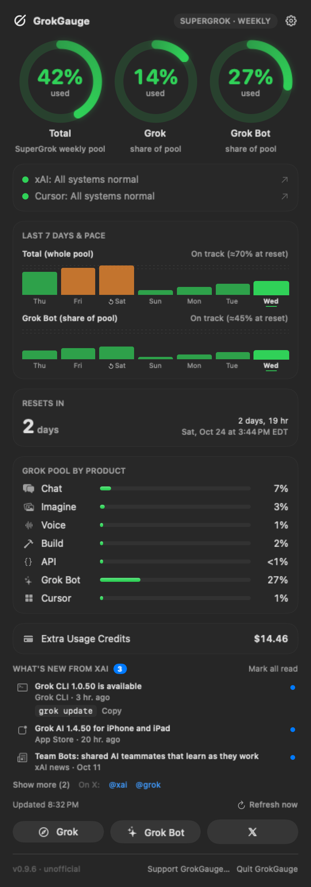
Welcome tour
The first time GrokGauge opens, a friendly 8-step tour shows you around. It checks your Grok sign-in, explains the rings with your color levels, the menu bar, settings and sync, and pace. Skip it anytime, or replay it later from the gear menu's Show Welcome Tour…
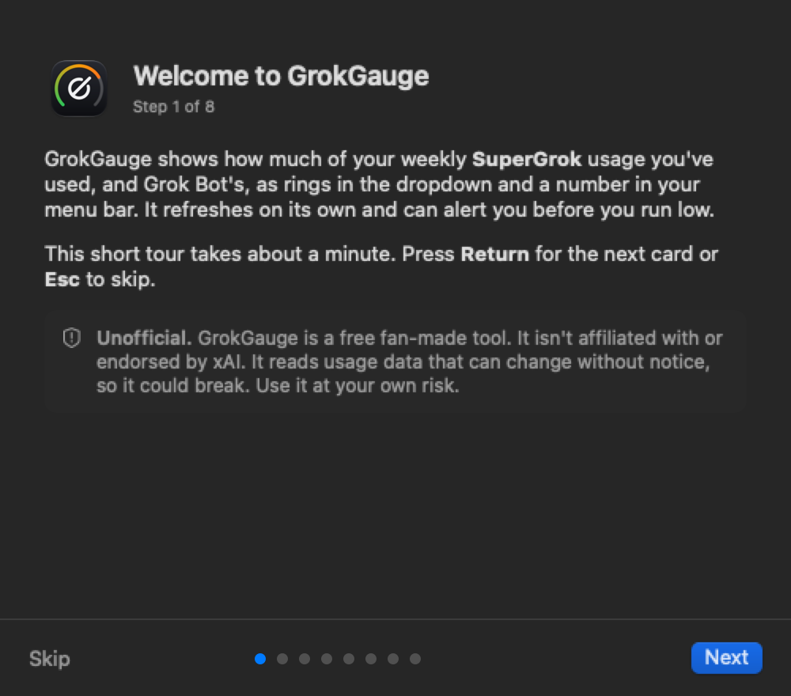
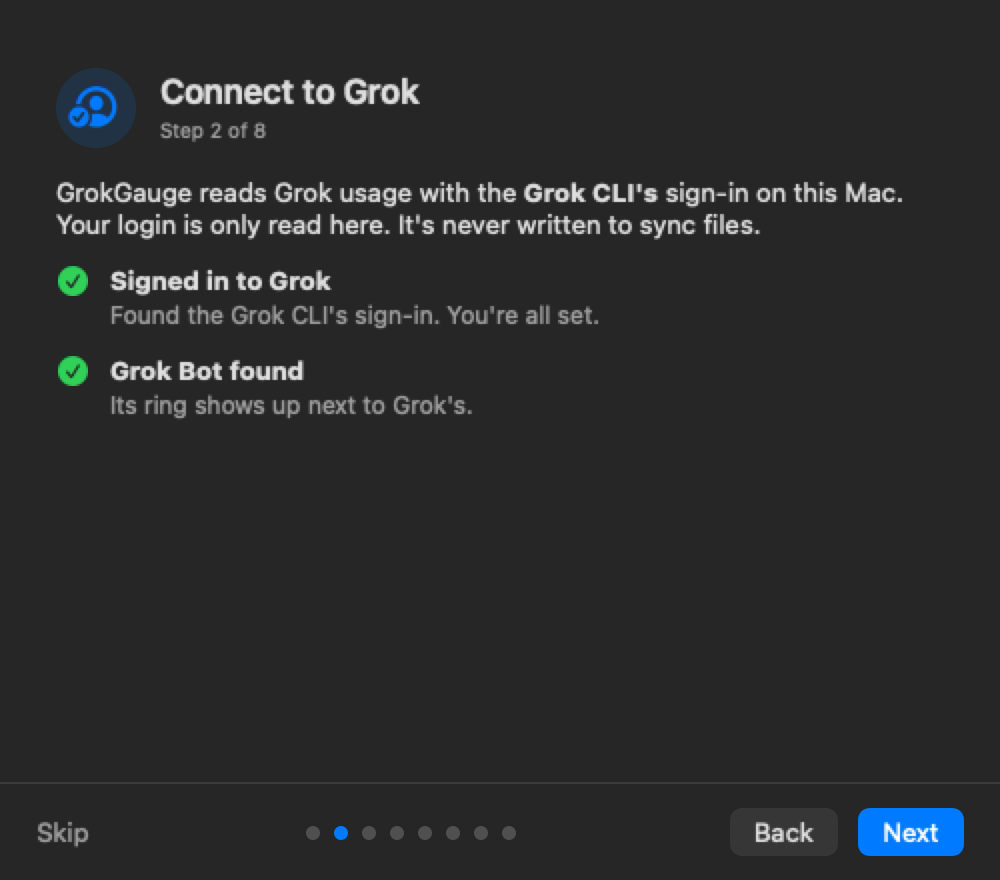
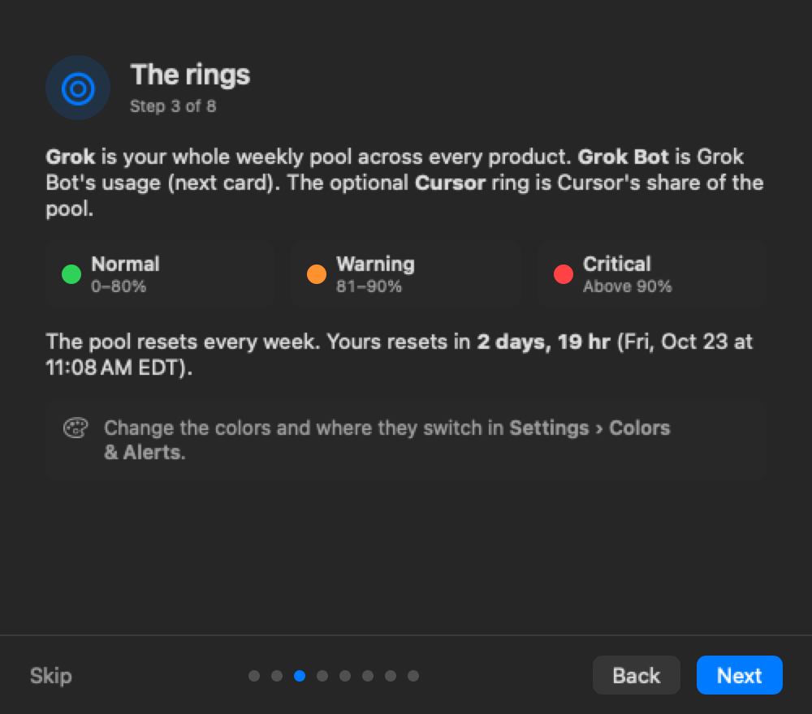
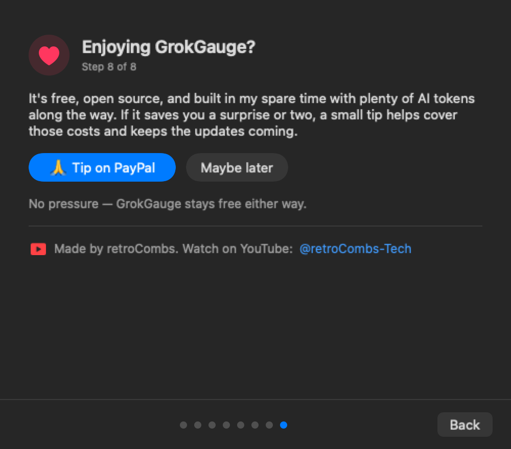
Back, Next and Skip on every card, with step dots. Return goes on, Esc skips.
Follows your Mac's appearance, and every card reads well with VoiceOver.
It shows once on each Mac. The last card offers an optional tip, and “Maybe later” means it never asks again.
Shown with sample data. Steps 4–7 cover the shared pool, the menu bar, settings & sync, and history & pace.
Features
Click the gauge (or press ⌃⌥G) and the whole picture drops down.

A bar, line or area graph for each ring, plus a projection: “On track (≈70% at reset)” or “At this pace you'll hit 100% by Fri 3 PM.”
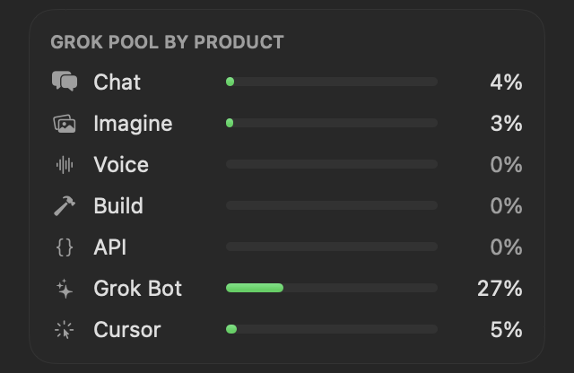
See what's eating your pool: Chat, Imagine, Voice, Build, API, Grok Bot and Cursor. Pick which ones show and how they're sorted.
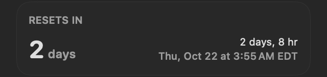
Days to reset, a live countdown and the exact reset time in your time zone.
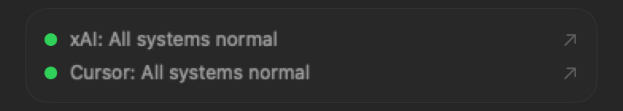
Two dots tell you if a slowdown is on their end. Click one to open the status page.
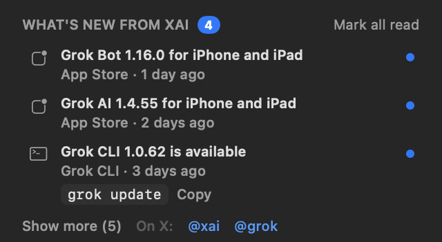
New Grok app releases, xAI news and Grok CLI updates, with the update command (brew upgrade --cask grok-build or grok update) ready to copy.
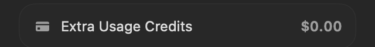
Your prepaid Grok credit balance, right next to your usage.
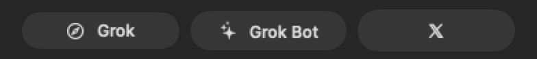
Jump straight to Grok, Grok Bot or X from the dropdown.
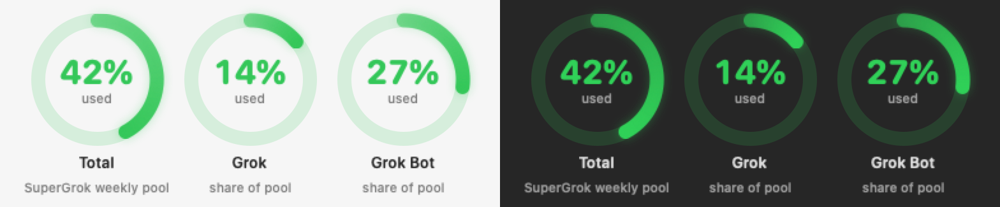
Follows your Mac's appearance, with a colorblind-friendly color preset too.
Point GrokGauge at a folder your Macs already sync. Your settings and every Mac's readings follow you.
A notification when a ring reaches your warning or critical level, once per week each.
Press ⌃⌥G from anywhere to open the dropdown.
Set it once and it's there every time your Mac starts.
No Grok CLI yet? GrokGauge walks you through installing it and running grok login.
Reorder or hide sections, pick ring and graph styles, and set your own color levels.
Sync between Macs
Pick one folder your Macs already sync, like Google Drive, iCloud Drive or Dropbox. Your settings and 7-day usage history sync through it, and each has its own switch. One status line tells you it's in sync and which Macs are in, with a single Sync Now.
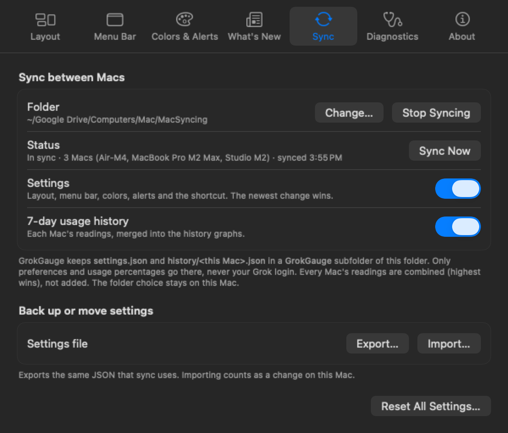
The rings
Total is your whole pool. Grok, Grok Bot and Cursor are each one's share of pool, so the slices add up to the Total (14% + 27% + 1% = 42%). Each ring turns green, orange and red at levels you choose.
Your whole SuperGrok weekly pool: everything below added up.
Regular Grok use (grok.com, the Grok apps, Imagine, Voice, the API): the Total minus Grok Bot and Cursor.
Grok Bot's share of the pool when the two share one, or its own weekly allowance when it has one.
Cursor's share of the pool, when xAI's usage data lists it. No Cursor sign-in needed.
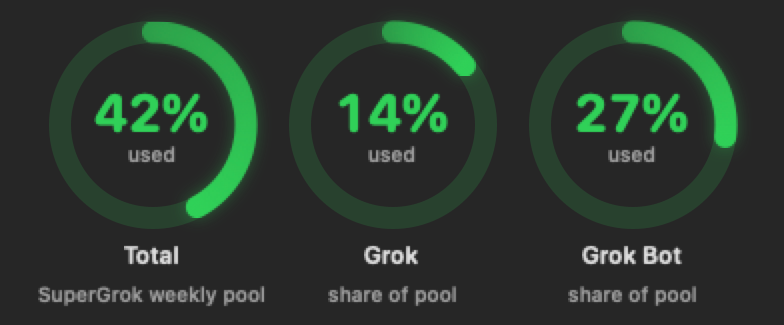
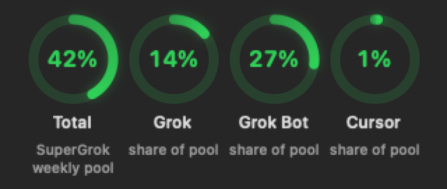
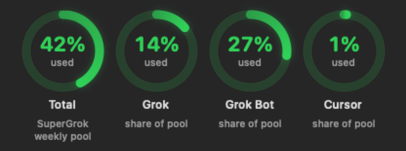
How it works
GrokGauge uses the Grok CLI login already on your Mac. No new accounts, no passwords, no middleman.
One Homebrew command installs GrokGauge and the Grok CLI. Or drag the app from GitHub Releases into Applications.
Run grok login once. GrokGauge reads that login from ~/.grok/auth.json and keeps it renewed, just like the CLI does.
Your usage appears in the menu bar and refreshes on its own every 5 to 60 minutes.
Install
brew install --cask stevencombs/tap/grokgauge
Also installs the Grok CLI (Homebrew's grok-build cask, downloaded from x.ai). Then run grok login once. Update later with brew upgrade --cask grokgauge.
Download the zip from the latest release, unzip it and drag GrokGauge.app into Applications. Each release lists the zip's SHA-256.
Latest release →No Homebrew, or prefer xAI's own installer? Install the Grok CLI with xAI's official installer, then sign in:
curl -fsSL https://x.ai/cli/install.sh | bash && grok login
Having both the Homebrew and installer copies is harmless; they share one login. GrokGauge offers the same steps in its dropdown. It never installs anything or signs in on its own.
FAQ
No. GrokGauge is an unofficial community project by Steven “retroCombs” Combs. It is not made, endorsed or supported by xAI or Cursor. It reads usage from unofficial endpoints that can change without notice, which could break it until it's updated.
The code is open source under the MIT license, so anyone can read it. Your Grok tokens go only to xAI's own servers, over HTTPS. There's no analytics or telemetry, and logins never sync between Macs. As with any unofficial tool, use it at your own risk.
Releases before 1.0 aren't notarized by Apple yet, so a manually downloaded copy gets a Gatekeeper warning the first time you open it. Open System Settings › Privacy & Security and click Open Anyway. The Homebrew install clears that flag for GrokGauge only. Version 1.0 is planned to be signed and notarized by Apple, so the warning goes away.
Nothing. GrokGauge is free. If it saves you from a surprise at the weekly limit, a tip is always appreciated.
No. The Total and Grok rings only need the Grok CLI. The Grok Bot ring appears when the Grok Bot app is installed, and the Cursor ring is an optional setting.
Yes. Choose a folder your Macs already sync (Google Drive, Dropbox, iCloud Drive and so on) and GrokGauge syncs your settings and usage history through it. Run grok login on each Mac, because logins are never synced. The Sync tab has one folder, one status line and a switch each for settings and history, and GrokGauge moves every Mac to the folder your other Macs use.
More apps from retroCombs
Small, native menu bar apps for Mac, built in the open.
Your SuperGrok and Grok Bot weekly usage as colored rings in the menu bar, so the weekly limit never sneaks up on you.
Local AI that renames and sorts your video and photo clips in place, with transcripts saved next to them.
Visit the ClipGauge page →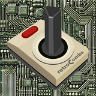
GrokGauge was made by Steven “retroCombs” Combs together with Grok Bot. If it saves you a surprise at the weekly limit, you can say thanks with a tip.